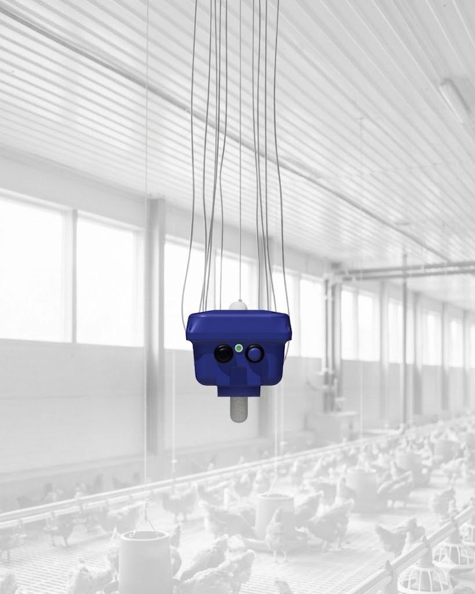

Sigue cada paso para una correcta instalación.

Verificación eléctrica
Antes de comenzar, verifica los siguientes requisitos en el sitio de instalación:
- check_circle Punto eléctrico a 110V
- check_circle Ambiente seco y protegido de la lluvia
Conexión y verificación
Conecta el sensor al toma corriente y presiona el botón para verificar el envío de datos.

Ensamble del sensor
Acomoda el sensor en la canastilla con todos sus componentes.
Unidad principal
Cable de poder
Antena
Canastilla
Instalación final
Instala el sensor en el galpón, a una altura aproximada de 45 cm desde el suelo hasta la base del sensor (bulbo de color gris).
El objetivo es que el sensor esté lo más cerca de los animales, sin que ellos lo toquen.
Mantener el sensor alejado de fuentes de calor directas. Realizar limpieza semanal con brocha y paño húmedo.
¿Necesitas ayuda?
Contacta a nuestro equipo de soporte
Damian García
damian.garcia@asimetrix.co
+57 311 2078988
Manuela Chavarría
manuela.chavarria@asimetrix.co
+57 318 2202707